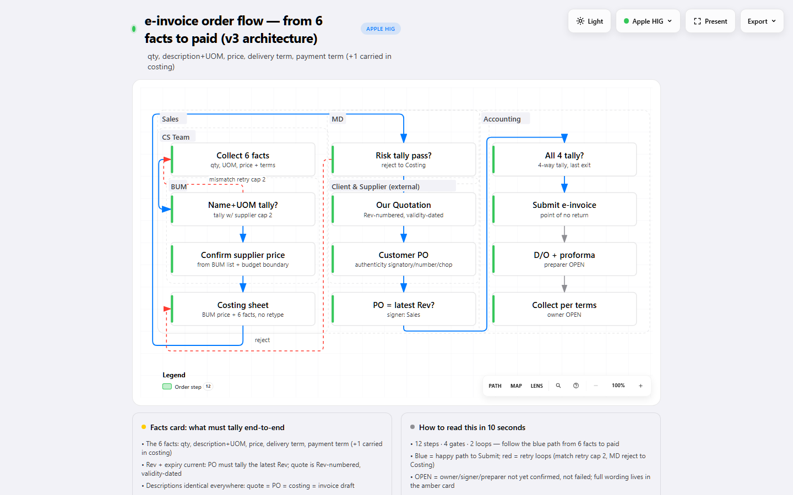
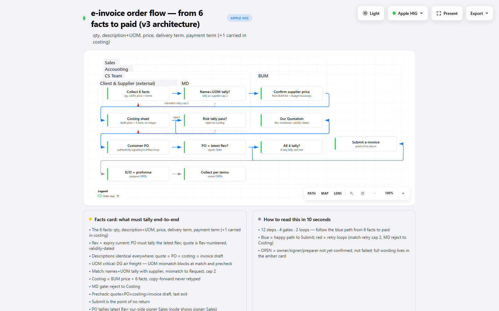
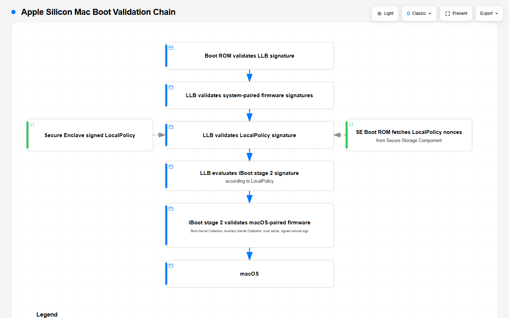
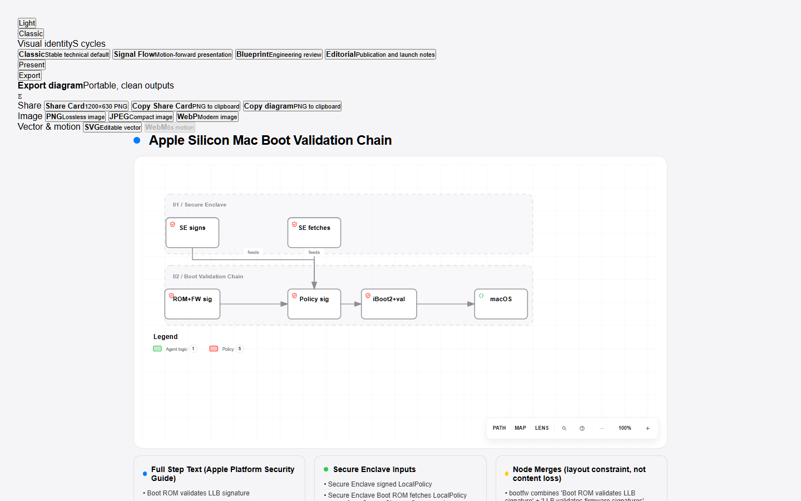
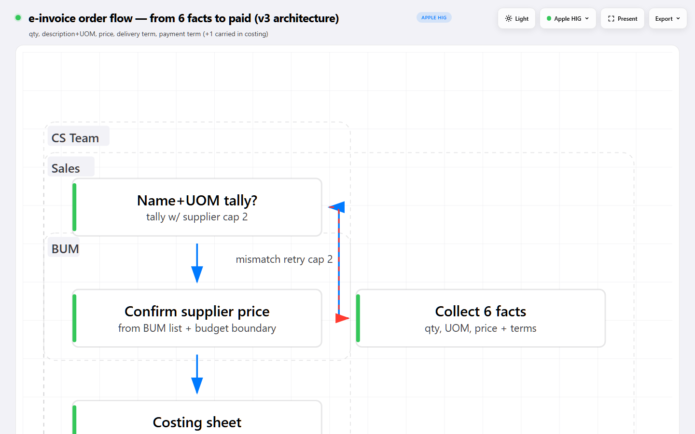
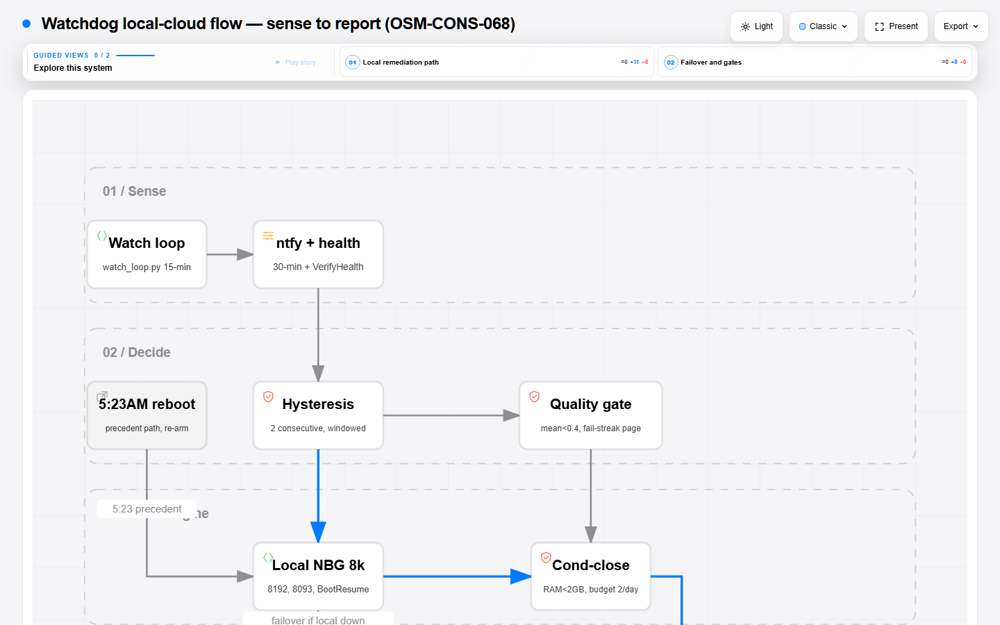

SEE-014 — does the page fit the drawing: before / after
Session OSM-SEE-014 · one page, every chart O1 measured · each chart captured on its own (never the gallery wrapper) · all shots 1440x900 light
- Pre-flight:
design-explore/committed asd34b2cf— 791 files, corpus loss-proof before any other step. - Prediction 1 verdict (pre-code): MIXED — 9 of 16 authored specs hand-write
meta.viewBox(suspect 2 carries ~half the corpus), 7 auto-fit (suspect 3 territory). Both suspects live. - O1 result: NO renderer change shipped. The only reachable auto-fit delta (architecture legend-probe reorder) is algebraically identical to the old code — proven by probe renders (probe-wide 381x271 both paths) and reverted. Hand-written pages keep their authored sizes (spec-wins); the three hand charts with real slack (chart1-boot-workflow 900x480 vs auto 720x404, aben 880x700 vs auto 720x652, einvoice-order-flow 880x960 vs auto 720x900) are recorded below as author decisions, not silently resized.
- Margin: 40px HIG empty gutter (
archify/renderers/shared/system-tokens.mjsv1.2.0:gutter.empty 40 = HIG 260pt->40pt pairing). Source: Commander seed, pinned SYS-001. A13 still passing where it passed (20/23 charts PASS @1440; the 3 FAILs — aben 244.72, chart1-boot-workflow 186.01, einvoice-order-flow 244.73 — are lane-layout imbalance, untouched by this session). - O2 result: regression cause named with quoted lines —
boundaryLabelClearance: 4(a9a7379, line 72) →SYSTEM_TOKENS.frameLabel.above, // 34(working tree, line 89) plus engine-positioned specs (structure-only, no pos) behind the thin interface. Reversal note: the 4→34 rail is independently revertible; the engine path is not (it owns all geometry since SYS-003). Trade call is the Commander's. - O3 result: 46/46 rows re-run equivalent — see011 ruler JSONs are FRESH (2026-09-15 10:07–10:11, after the last code mtimes: workflow renderer 18:21 prior day, geometry-assert 2026-09-14 23:06). NA split out (4 ref-chart rows all-NA). SEE-013 deltas: none beyond SEE-013's own 8-row card-fit (workflow renderer diff since d34b2cf is SEE-013's, already booked).
0 · Count table — page vs drawing per chart BEFORE PICTURE
Page = svg viewBox in the delivered html. Drawing = union of rendered rects. Hand/auto = meta.viewBox present/absent in the author spec. Engine charts have no author spec on disk (structure-only since SYS-003).
| chart | page WxH | hand / auto | drawing WxH | empty share |
|---|---|---|---|---|
| aben-kkse-agent-flow | 880x700 | HAND [880,700] | 678x570 | 37.3% |
| chart1-boot-architecture (+apple-hig) | 960x620 | HAND [960,620] | 917x602 | 7.3% |
| chart1-boot-workflow | 900x480 | HAND [900,480] | 660x273 | 58.3% |
| chart2-orom pair | 820x780 | HAND [820,780] | 778x747 | 9.1% |
| cnc-bus-architecture | 950x438 | AUTO (no viewBox) | 908x420 | 8.3% |
| einvoice-order-flow-v3 | 924x560 | HAND [924,560] | 888x504 | 13.5% |
| einvoice-order-flow | 880x960 | HAND [880,960] | 680x769 | 38.1% |
| loop-open / closed-pilot / closed-full | 720x900 / 720x776 / 720x900 | AUTO | 678x818 / 678x694 / 678x773 | 14–19% |
| ref-chart-1 / ref-chart-2 | 868x630 / 840x609 | STATIC (no spec) | 775x564 / 620x564 | 20.1% / 31.6% |
| sys003 r01–r04 | 678x1434 / 1357x576 / 987x864 / 1357x576 | AUTO (engine, no author spec) | 616x1346 / 1276x521 / 925x789 / 1276x521 | ~15% |
| sys004-einvoice | 1352x613 | AUTO (engine) | 1272x586 | 10.1% |
| sys004-org | 1012x673 | AUTO (engine) | 932x526 | 28.0% |
| watchdog / v2 | 720x1024 / 720x1148 | AUTO | 683x1064 / 683x1064 | 12.1% |
1 · O2 — the same chart, before the window vs after REGRESSION SHOWN architecture
Left: einvoice-order-flow-v3 (written 2026-09-13 00:53) — Sales (35,45), CS Team (35,77), BUM (51,167), MD (341,45), Accounting (615,45): three clean columns. Right: sys004-einvoice (written 2026-09-13 22:09) — Sales (65,16), Accounting (65,44), CS Team (65,72): three pills stacked in the top-left 65px column, font 13.0 → 18.9px. Same 6 frames, same wraps; only the rail + engine changed.


OLD (a9a7379:archify/renderers/architecture/render-architecture.mjs:72):
boundaryLabelClearance: 4,
NEW (working tree archify/renderers/architecture/render-architecture.mjs:89):
boundaryLabelClearance: SYSTEM_TOKENS.frameLabel.above, // 34: proximity/grouping rail (was 4)
PLUS (same file, lines 62-72): engine-positioned specs behind the thin interface:
let engineRoutes = null;
if (isStructureOnlyArchitecture(loaded.diagram)) {
const laid = await layoutArchitectureStructure(loaded.diagram);
arch = laid.spec; engineRoutes = laid.routes;
}
Git window proof: tools/archify has 3 commits total (clone + a9a7379 2026-08-27 + d34b2cf 2026-09-15);
the 00:53→22:09 change rode the uncommitted working tree (render-architecture.mjs mtime 2026-09-13 22:09).
2 · Hand-written pages that keep their slack NO CHANGE spec-wins
chart1-boot-architecture 960x620 (drawing 917x602, 7.3% empty): authored size ≈ auto size — no fault. chart1-boot-workflow 900x480 (drawing 660x273, 58.3% empty, auto would be 720x404): the 180px right band is an author decision, kept.


3 · Auto-fitted pages — the fit already works NO CHANGE engine + lane auto
sys003-einvoice-r01 678x1434 (drawing 616x1346, 14.7% empty, margin gap ≈ 40px each side): engine auto-fit holds the 40px HIG margin. watchdog-v2 720x1148 (right gap 34.8px, legend band intact): lane auto-fit holds. Re-render with the SEE-014 candidate produced byte-identical viewBox (1352x613 → 1352x613), so no pair is shown — the fit was already correct.

